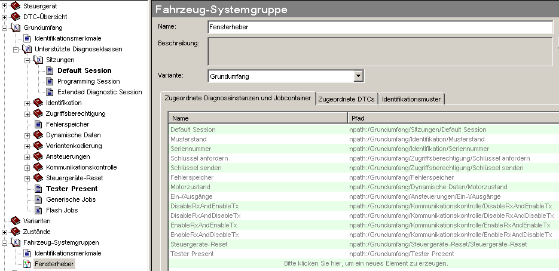
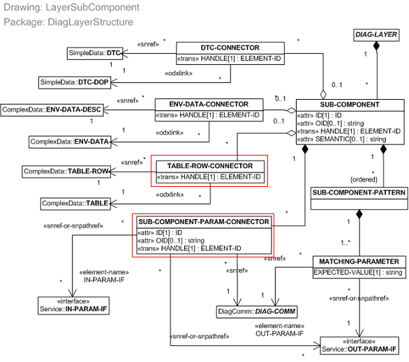
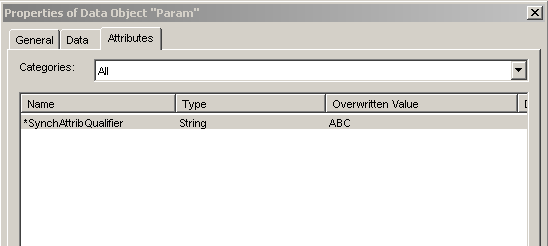

With CANdela Studio 6.0 the export of ODX2.2.0 is supported. Up to 6.0 Release the generated ODX-files do not differ very much from the generated ODX 2.1.0.
In ODX 2.2.0 RESERVED-PARAMs do not support STANDARD-LENGTH-TYPEs anymore. Hence no coded value can be specified anymore.
The ODX-Export generates SUB-COMPONENTs from the CANdela-VehicleSystemGroup. In the CANdela-VehicleSystemGroup, the user can select the DiagnosticInstances which are available in this VSG.
In case a DiagnosticClass is exported as TABLE, a TABLE-ROW-CONNECTOR will be created. Otherwise the ODX-Export will create a SUB-COMPONENT-PARAM-CONNECTOR.

VehicleSystemGroup

ODX model for SUB-COMPONENT
With CANdelaStudio 7.0 SP1 it is possible to specify that a VehicleSystemGroup is not present in a certain variant. In this case the ODX-Export will not generate a SUB-COMPONENT for this variant.
In case the ECU supports assigning specific DataObjects to VehicleSystem Groups the ODX-Export generates a PARAM-SNREF at the SUB-COMPONENT-PARAM-CONNECTOR for each DataObject associated with the VSG in the specific service.
For ODX 2.2.0 only the target groups "Development", "Supplier", "Production", "Aftersales" and "Aftermarket" will be mapped to the ODX-audience. All other target groups will be mapped to "ADDITIONAL-AUDIENCE".
The ODX-Export will generate an "ENABLED-AUDIENCE-REF" for all activated audiences not contained in the list above.
With CANdelaStudio 6.5 it is possible to define a synchronization attribute qualifier at the ECU. For each PARAM the synchronization attribute qualifier can be defined. The ODX-Export will generate a SDG at the PARAM to mark the PARAM with the synchronization attribute qualifier.

Synchronization attribute